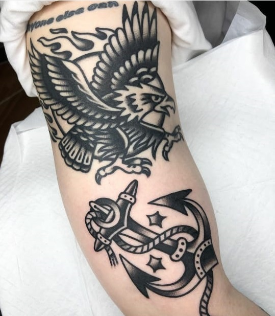

PORTFOLIO
En este catalogo vas a encontrar los diferentes estilos en los que nos especializamos en el estudio, fotos de los mismos y la explicacion de sus diferencias, para que selecciones el estilo que mas va con vos.
OLDSCHOOL
Este estilo de tatuaje, tambien llamado "tradicional americano", es caracterizado por sus lineas gruesas y sus paletas de colores: rojo, amarillo, naranja, verde y marron, entre unos pocos mas. En este estilo destacan los motivos romanticos, animales, marineros, florales, entre otros.

